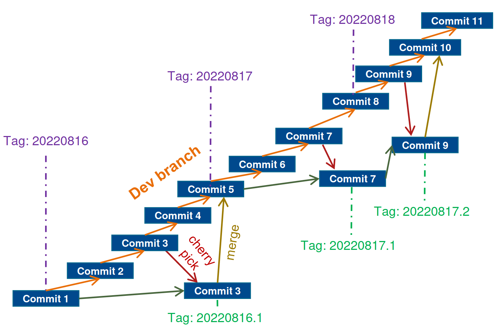
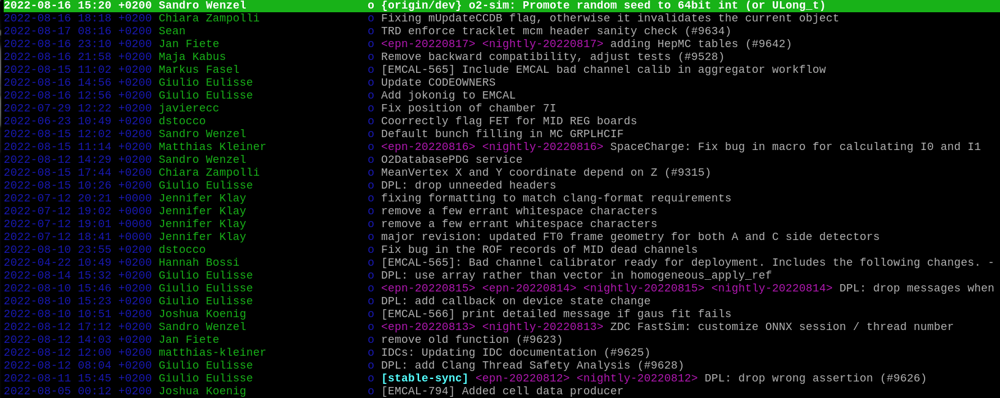
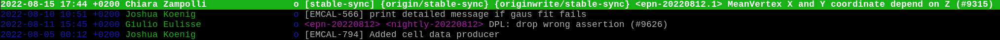
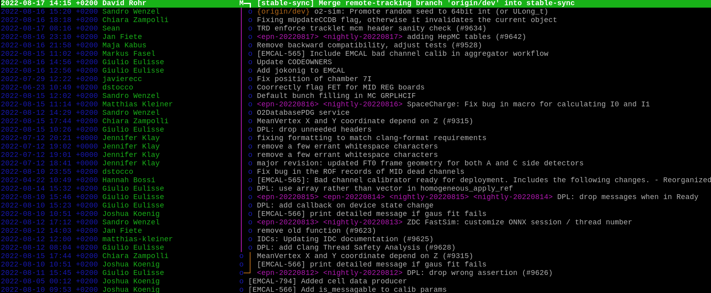

O2 stable branches
Stable branches for O2#
The O2 software is developed continuously in the dev branch. Both the synchronous and the asynchronous processing have their own stable branches, stable-sync and stable-async, which follow the dev branch closely. The following procedure has been agreed upon for managing the two stable branches:
- Both synchronous processing at P2 and the asynchronous processing on the grid might require quick fixes which should not rely on coordination between the two. For that reason there are two stable branches
stable-syncandstable-async. - No development shall go into these branches. All developments must go into
dev. They will not be used to port fixes by user requests. - When requested by RC or by experts for sync / async reconstruction, we can cherry-pick fixes / features from
devin one of the stable branches. We will not do extensive back-porting. If the patches do not apply cleanly or with only trivial merge conflicts, we do not cherry-pick but we will merge the fulldevbranch into the stable branch. - We will regularly merge the full
devbranch into the stable branches. For synchronous reconstruction usually synchronized with the large software updates. After merging,stable-*will be hard reset to the state ofdev. - The stable branches shall not split up further, i.e. we only either cherry-pick individual commits on top, or we merge the full
dev. - Nightly builds for
devare unaffected, we do not do nightly builds for the stable branch. Instead, tags of the stable branch are only built manually via jenkins when needed. - We use the same validation mechanism for tags of the stable branch as for the
devbranch, i.e. the FST forstable-sync, and the release validation forstable-async. - The naming scheme for tags of the stable branch is [last tag in dev branch] + "." + [incrementing number].
If changes to an existing tag are carried out, you can instead add an incrementing letter, for example,
async-20231102.3->async-20231102.3a->async-20231102.3b.
The procedure for cherry-picking and for merging is described below. The following branching scheme should give an overview: 
Cherry-picking specific commits from dev into stable-*#
- We start with the branch
stable-syncat commit6d54961f81f6c129a28b655baa4101b0ecd41535, tagepn-20220812.

- The remote repository is set up with write access under a special name "upstream-write", to make sure that no accidental push to "upstream" is tried (upstream is configured as read-only via http).
- First, rebase to make sure you are on the latest state of the upstream branch.
- Cherry-picking the 2 commits
0c3c41a93e2e2bbd1ce650e852128b66d38c907aand04f7383a49287af12c37c5bb88cb36f7fcc8bc22. - Please make sure to cherry-pick them in the order they are applied in the
devbranch. - Only accept cherry-picks that apply cleanly, or if the merge conflicts are trivial!
- When you want to build that version, tag it using the naming scheme mentioned above. In this case as
epn-20220812.1. - Push the branch and the tag
The console output looks as follows:
qon@qon ~/alice/O2 $ git checkout stable-sync
Already on 'stable-sync'
qon@qon ~/alice/O2 $ git fetch upstream
qon@qon ~/alice/O2 $ git rebase upstream/stable-sync
Current branch stable-sync is up to date.
qon@qon ~/alice/O2 $ git cherry-pick 0c3c41a93e2e2bbd1ce650e852128b66d38c907a
[stable-sync 77305662736] [EMCAL-566] print detailed message if gaus fit fails
Author: Joshua Koenig <joshua.konig@cern.ch>
Date: Wed Aug 10 10:51:08 2022 +0200
3 files changed, 77 insertions(+), 67 deletions(-)
qon@qon ~/alice/O2 $ git cherry-pick 04f7383a49287af12c37c5bb88cb36f7fcc8bc22
[stable-sync b2175be0ffc] MeanVertex X and Y coordinate depend on Z (#9315)
Author: Chiara Zampolli <chiara.zampolli@cern.ch>
Date: Mon Aug 15 17:44:26 2022 +0200
9 files changed, 434 insertions(+), 266 deletions(-)
qon@qon ~/alice/O2 $ git tag -a epn-20220812.1
hint: Waiting for your editor to close the file...
qon@qon ~/alice/O2 $ git push upstreamwrite stable-sync
Enumerating objects: 53, done.
Counting objects: 100% (53/53), done.
Delta compression using up to 16 threads
Compressing objects: 100% (22/22), done.
Writing objects: 100% (28/28), 7.45 KiB | 7.45 MiB/s, done.
Total 28 (delta 22), reused 9 (delta 4), pack-reused 0
remote: Resolving deltas: 100% (22/22), completed with 20 local objects.
To github.com:AliceO2Group/AliceO2.git
b2175be0ffc..b3dd9e5135c stable-sync -> stable-sync
qon@qon ~/alice/O2 $ git push upstreamwrite epn-20220812.1
[...]
- See below the state of the current branch. We are at the previous state (
epn-20220812) with the two cherry-picked commits on top. And this state is tagged asepn-20220812.1.

Merging the changes from dev into stable-*#
Next we want to bring stable-sync to the state of the current dev. For this we merge upstream/dev into the current branch stable-sync. (We could also merge the latest nightly-tag, if that nightly tag is what is running on the EPNs.)
- We merge with the option -X theirs to make sure that in case of a conflict, we use the dev branch.
- Afterwards, in case the merge did not yield the exact state of upstream/dev, we run a git diff to upstream/dev, apply possible changes to the working tree, and amend the merge commit by it. The exact commands for this are:
- Here again the possible console output:
qon@qon ~/alice/O2 $ git fetch upstream
qon@qon ~/alice/O2 $ git merge -X theirs upstream/dev
Auto-merging Common/SimConfig/include/SimConfig/SimConfig.h
Auto-merging Common/Utils/include/CommonUtils/BoostHistogramUtils.h
Auto-merging Detectors/EMCAL/calibration/include/EMCALCalibration/EMCALCalibExtractor.h
hint: Waiting for your editor to close the file...
Merge made by the 'ort' strategy.
CODEOWNERS | 4 +-
Common/SimConfig/include/SimConfig/SimConfig.h | 6 +-
Common/SimConfig/src/SimConfig.cxx | 6 +-
Common/Utils/CMakeLists.txt | 2 +-
Common/Utils/include/CommonUtils/BoostHistogramUtils.h | 142 +++++++++++++++++++++++++++++++-
Common/Utils/include/CommonUtils/RngHelper.h | 6 +-
[...]
78 files changed, 2518 insertions(+), 1572 deletions(-)
qon@qon ~/alice/O2 $ git diff upstream/dev | git apply --allow-empty -R --index
qon@qon ~/alice/O2 $ git commit --amend --no-edit
[stable-sync 005d1dd4aff] Merge remote-tracking branch 'upstream/dev' into stable-sync
Date: Wed Aug 17 14:15:22 2022 +0200
- Finally, make sure we are exactly at
upstream/dev. The following diff must not show any difference.
-
Now the
stable-syncbranch is exactly at the state ofupstream/dev, and from here on we can cherry-pick further commits fromupstream/devthat were committed after the merge. -
Please see the final state in the figure below. From the point we started branching of (
epn-20220812) thestable-syncbranch had 2 commits cherry-picked, and then it is merged withupstream/dev.
